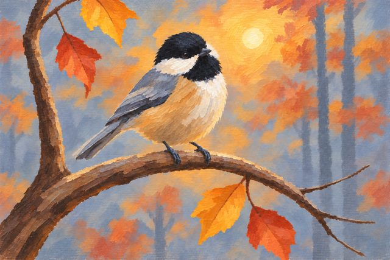

Our painting lessons
Pick one and open it on your phone or tablet next to the easel. Each one has every step's picture, the paints to
mix, and the brushes.
A small red sailboat16 steps14 x 11 in canvas5 tubes2 known problemsOpen lesson 
A black-capped chickadee perched on a curved autumn branch19 steps14 x 11 in canvas10 tubes7 known problemsOpen lessonA striped hot air balloon over rows of lavender at sunset23 steps14 x 11 in canvas11 tubes4 known problemsOpen lesson